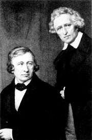

Friedrich: Krajina z ostrova Rujany
|
NĚMECKÝ ROMANTISMUS
Řada světových romantiků obdivovala díla představitelů německého preromantismu (Goetha, Schillera, Bürgera a Herdera). Vycházela z nich i nová generace německých umělců a myslitelů. Filozof Friedrich Schlegel (1772-1829) zformuloval program tzv. rané romantické školy. Velký vliv na evropské myšlení měli Johann Gottlieb Fichte (1762-1814), Friedrich Schelling (1775-1854) a především Georg Wilhelm Friedrich Hegel (1770-1831), který se zaměřil na filozofii dějin a vývoj ducha. Tento idealistický filozof využíval hlavně dialektickou metodu.
Průkopníkem německé romantické malby byl Philipp Otto Runge (1777-1810). Snové romantické výjevy maloval Caspar David Friedrich (1774-1840). Ve Vídni působili nazaréni, kteří zpracovávali náměty z německého středověku. Ilustrátor Carl Spitzweg (1808-1885) měl blízko k biedermeieru.
|
Historie
Německo bylo rozděleno na drobné státečky až do roku 1871. Stále většího významu nabývalo Prusko. Napoleon ho roku 1806 porazil a vytvořil na německém území vestfálské království. Po jeho pádu vznikl německý spolek, ve kterém mělo hlavní slovo Rakousko. Hnutí Mladé Německo (1830-1848) sdružovalo revoluční spisovatele. Během roku 1848 vypukla řada republikánských povstání a ve Frankfurtu nad Mohanem zasedlo Národní shromáždění, které přijalo celoněmeckou ústavu.
|
Novalis (1772-1801)
Novalis (vlastním jménem Georg Friedrich Philipp von Hardenberg) se přátelil s Schillerem. Velmi ho poznamenala smrt snoubenky Sofie a bratra Erasma, kteří zemřeli na tuberkulózu. Této chorobě podlehl také Novalis. Tvořil filozofické fragmenty – Květinový prach, Víra a láska, Křesťanství čili Evropa, složil básnický cyklus Hymny noci a začal psát román Jindřich z Ofterdingen.

Friedrich: Moře ledu
|
Novalis: Jindřich z Ofterdingen
Děj románu se odehrává ve 13. století. Hlavní postavou je středověký minnesänger Jindřich z Ofterdingen, kterého tradice považuje za autora Písně o Nibelunzích. Jindřich spatří ve snu modrý květ – symbol opravdové poezie, slávy a štěstí a vydává se ho hledat. V Augsburgu poznává básníka Klingsohra a zamiluje se do jeho dcery Matyldy.
Děj románu doplňují básně, pohádky a úvahy o smyslu poezie. Novalis stačil dokončit pouze jeho první díl – Očekávání, další části (Naplnění a Jas) se dochovaly jen v náčrtcích. Zprvu realistický román se měl proměnit ve fantastickou alegorii. Jindřich poznává pravou podstatu přírody, procestuje různé části světa (Itálie, Orient) i historické epochy (starověký Řím, doba Fridricha I.) a konečně nachází modrý květ.
|
Franz Gareis: Novalis

Friedrich: Opatství v dubovém lese
|
Heinrich Heine (1797-1856)
Heinrich Heine [hajnrich hajne]
kvůli neustálým konfliktům odešel z Německa do Paříže, kde se spřátelil s významnými romantiky (Hugo, Dumas, Chopin...). Za účast v hnutí Mladé Německo zakázal roku 1835 německý sněm vydávání jeho knih. Napsal básnické sbírky Kniha písní, Německo – Zimní pohádka a Romancero, spis Romantická škola a fejetony Obrazy z cest.
|
Heinrich Heine: Kniha písní
Jádrem rozsáhlé básnické sbírky Kniha písní jsou milostné básně – elegie (Lorelei), balady nebo romance (Don Ramiro). Další verše líčí živelnou přírodu (cyklus Severní moře) nebo popisují autorovy nálady, prožitky a názory. Řada básní vyznívá ironicky.
|

Heinrich Heine
Která báseň tě zaujala nejvíce? Proč?
|
Bratři Grimmové
Jacob (1795-1863) a Wilhelm (1786-1859) Grimmové byli průkopníky německé folkloristiky. Zatímco Wilhelm pohádky hlavně sbíral a upravoval, Jacob se je snažil podrobit důkladnému filologickému rozboru. Oba bratři působili na univerzitě v Berlíně jako profesoři. K jejich dalším pracím patří sbírka Německé pověsti, výkladový slovník němčiny nebo Německá mluvnice.
Friedrich: Strom
|
Německé pohádky bratří Grimmů
Bratři Grimmové sbírali pohádky nejen kvůli zájmu o lidové tradice. Chtěli dokázat, že německé obyvatelstvo sdílí společnou kulturu, přestože nežije ve společném státě, a podpořit sjednocení Německa. Různé varianty pohádek se snažili oprostit od pozdějších rozšíření. Zajímaly je totiž prapůvodní mýty, ze kterých se tyto příběhy zrodily. Zaznamenané texty upravovali i stylisticky. Sbírka Pohádky pro děti a celou rodinu obsahovala v konečné redakci na 200 příběhů. K nejznámějším patří Popelka, Sněhurka, Šípková Růženka, Jeníček a Mařenka, Červená Karkulka, Žabí král, Obušku, z pytle ven, Bílý had, O Ďáblovi a jeho třech zlatých vlasech, Kožešinka nebo Chytrá chalupnická dcerka.
|

Bratři Grimmové
Řada německých pohádek má i své české varianty. Zkus přiřadit následující české názvy k pohádkám bratří Grimmů: O perníkové chaloupce, Zlatovláska, O neposlušných kůzlátkách, O třech zlatých vlasech děda Vševěda, Princezna se zlatou hvězdou na čele, O chytré horákyni.
|
Friedrich Hölderlin
(1770-1843)
Hölderlin pracoval jako domácí učitel. Přátelil se s Schillerem a Hegelem. Na sklonku života propadl těžkým depresím, které mu znemožnily pokračovat v tvorbě. Napsal básně Hymnus na svobodu a Hymnus na lidstvo, divadelní hru Empedokles a román Hyperion.
|
Friedrich Hölderlin: Hyperion aneb
eremita v Řecku
Hölderlinův román má formu dopisů, které píše Hyperion svému příteli Bellarminovi. Čtenář může sledovat postupné dozrávání hlavního hrdiny. Hyperion prožívá bezstarostné mládí, lásku k Diotimě a účastní se povstání Řeků proti turecké nadvládě. V dlouhých filozofických pasážích popisuje své názory na svět.
|
Friedrich Hölderlin
Jaký je Hyperion?
Co si myslí o Němcích?
Souhlasíš s ním? Proč?
|
Ernst Theodor Amadeus Hoffmann (1776-1822)
Hudební skladatel, dirigent a malíř E.T.A. Hoffmann napsal romány Ďáblův elixír a Životní názory kocoura Moura. Další tajemné, satirické a hororové příběhy shrnul do rozsáhlých cyklů Fantastické povídky po Callotově způsobu a Serapionovi bratři.

Friedrich: Kříž
|
Hoffmannovy povídky
Hoffmann se snažil vzbudit ve čtenáři dojem, že jeho texty jsou autentické záznamy, dopisy nebo vzpomínky skutečných osob. Proto je někdy vydával anonymně. Ve svých povídkách využíval hluboké znalosti hudby a tajemno alchymistických postupů. Mezi jeho nejznámější povídky patří Rytíř Gluck, Zlatý kořenáč, Pískař, Zachýsek zvaný Rumělka, Louskáček a myší král nebo Mistr Blecha.
|

Hoffmannův autoportrét
Jak na tebe působí začátek Hoffmannovy povídky?
Zkus ji dokončit a pak si přečti Hoffmannovu verzi.
Kdo napsal operetu Hoffmannovy povídky?
Víš, kdo byl Callot?
|
Internetové stránky
Novalis
Novalis
Heine
Grimmové, pohádky
Grimmové
Hölderlin
Hölderlin
Hoffmann
Hoffmann
Neuschwanstein, zámek
Walhalla, památník u Regensburgu
Karl Friedrich Schinkel: Skalní brána
|
Doporučená četba
Berkovskij, Naum: Německá romantika, přel. R.Grebeníčková, Odeon, Praha 1976
Grimmové, Jacob a Wilhelm: Pohádky, přel. J.Fučíková, Odeon, Praha 1988
Deset německých novel, Československý spisovatel, Praha 1962 (Kleist, Hoffmann...)
Hledání modrého květu, Středočeské nakladatelství a knihkupectví, Praha 1988
Heine, Heinrich: Kniha písní, přel. A.Pikhart, Otto, Praha 1935
Heine, H.: Meč a plamen, přel. J.Hiršal, Mladá fronta, Praha 1962
Heine, H.: Obrazy z cest
Heine, H.: O Německu, Praha 1951
Heine, H.: Písně a lamentace, Československý spisovatel, Praha 1966
Hoffmann, E.T.A.: Ďáblův elixír, přel. H.Karlach, Odeon, Praha 1971
Hoffmann, E.T.A.: Fantastické povídky, přel. J.Bílý, Mladá fronta, Praha 1959
Hoffmann, E.T.A.: Mistr Blecha, Odeon, Praha 1976
Hölderlin, Friedrich: Hyperion aneb eremita v Řecku, přel. A.Pešek, Odeon, Praha 1988
Hölderlin, F.: Světlo lásky, přel. V.Mikeš, Československý spisovatel, Praha 1988
Květinový prach, přel. I.Slavík, Mladá fronta, Praha 1967
Nezval, Vítězslav: Překlady II, Československý spisovatel, Praha 1984 (Heine)
Německé pohádky, přel. H.Helceletová, Praha 1964
Novalis: Modrá květina, přel. V.Feldstein, Odeon, Praha 1971 (Jindřich z Ofterdingen, Hymny noci)
Novalis: Zázračná hra světa, Praha 1991 (fragmenty)
Spisy H.Heina (7 svazků), SNKLHU
Stromšík, Jiří: Od Grimmelshausena k Dürrenmatovi, H&H, Praha 1994
Z německé poezie, Praha 1957
|
Připrav si referát o některé z uvedených knih nebo internetových stránek.

Runge: Ráno
Památník Valhala leží nedaleko Řezna. Jsou zde pohřběni němečtí velikáni.
|
|